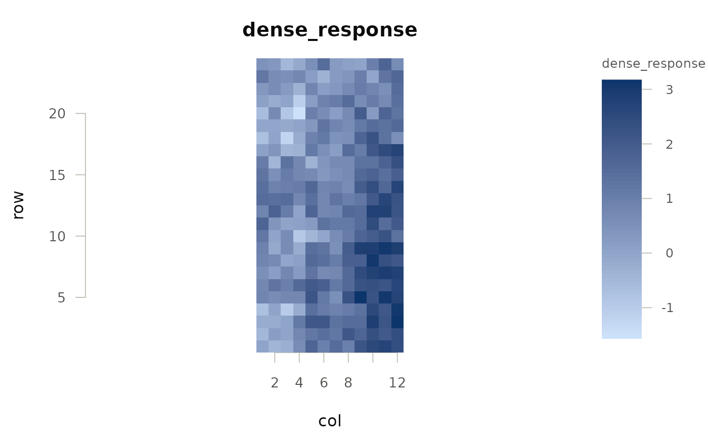
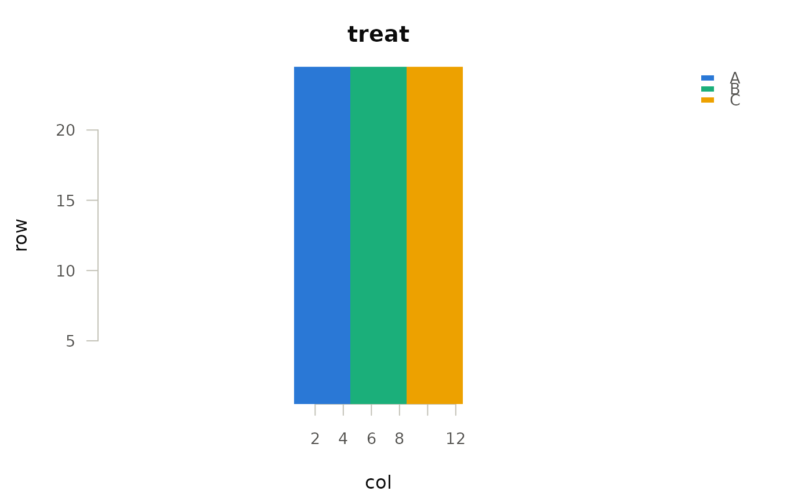

Draws one cell per row of data, coloured by value. It is the workhorse
behind the package's other plots and is exported because most of what a
trial team wants to look at is a map of something: the yield layer, a kriged
soil surface, an elevation covariate, the zones, the residuals of a fit.
Usage
ofe_map(
data,
value,
x = NULL,
y = NULL,
type = c("auto", "sequential", "diverging", "categorical"),
main = NULL,
xlab = NULL,
ylab = NULL,
legend = TRUE,
palette = NULL,
cell = NULL,
na_col = "#eeeeec",
border = NA,
overlay = NULL,
...
)Arguments
- data
Data frame with one row per cell.
- value
Character; the column to colour by.
- x, y
Character; coordinate columns. Defaults to
"x"/"y", then"x_centre"/"y_centre", then"col"/"row".- type
Colour scale to use.
"auto"picks categorical for a factor and sequential otherwise; it never picks diverging, because a variable holding negative values is not thereby a signed one, and a two-hue scale on a variable with no meaningful zero invents a division that is not in the data. Ask for"diverging"when zero really is the reference.- main, xlab, ylab
Labels.
maindefaults to the column name.- legend
Logical; draw the colour key.
- palette
Optional character vector of colours overriding the default scale.
- cell
Numeric; cell size in coordinate units. Defaults to the spacing inferred from the coordinates.
- na_col
Colour for cells whose value is missing.
- border
Colour for cell borders, or
NAfor none.- overlay
Optional function of no arguments, called once the cells are drawn and while the map panel is still the active coordinate system, to add labels, outlines or points. Drawing after
ofe_map()has returned will not work: the legend key is a second panel, so the device's coordinates no longer belong to the map.- ...
Passed to
graphics::plot().
Details
The colour scale follows the job the variable does, which is why type
exists and why "auto" guesses rather than always using one ramp:
"categorical"A factor or character column: identity, so distinct hues, in a fixed order.
"sequential"A numeric column that is all one sign: magnitude, so one hue running light to dark.
"diverging"Polarity, so two hues meeting at a neutral grey. Only for variables where zero is the reference – residuals, differences, departures from a target. The scale is forced symmetric about zero so that equal departures either side get equal ink; an asymmetric diverging scale makes one direction look larger than it is.
Examples
sim <- simulate_ofe_trial(n_row = 24, n_col = 12, seed = 1)
ofe_map(sim$grid, "dense_response")

ofe_map(sim$grid, "treat")
